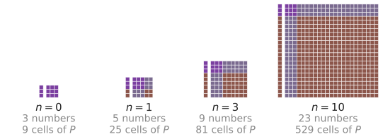

s=(the robotx, y, θ, landmark 1ℓ1,x, ℓ1,y, …, landmark nℓn,x, ℓn,y)
The first way: a landmark is a point, two numbers in one long state.
| step |
when |
the state s |
P |
| Predict |
every scan |
x,y,θ move, every ℓ stays |
the robot's rows and columns change, the landmarks' block stays |
| Update |
a reading matched a landmark |
every number moves |
every cell changes |
| New landmark |
a reading matched none |
2 numbers join the end |
2 rows and 2 columns join, old cells stay |

- Conclusion: the number of landmarks need not be known; the price is P — at 1000 landmarks 4 million cells, 32 MB
Legend
s — the state: the numbers the EKF estimates
x,y,θ — the robot's pose
ℓj,x,ℓj,y — where landmark j is in the room, m
n — the landmarks in the state so far: it grows
P — the state's doubt, a covariance matrix: a row and a column per number of s, so (3+2n)2 cells
purple — the robot's numbers and cells
brown — the landmarks'
grey-violet — how the errors of the robot and of a landmark depend on each other
MRPT's class CKalmanFilterCapable<3, 2, 2, 3> — 3 numbers of the robot, 2 of a reading, 2 of a landmark, 3 of a step